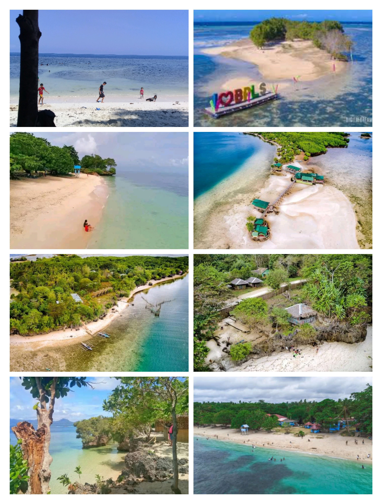
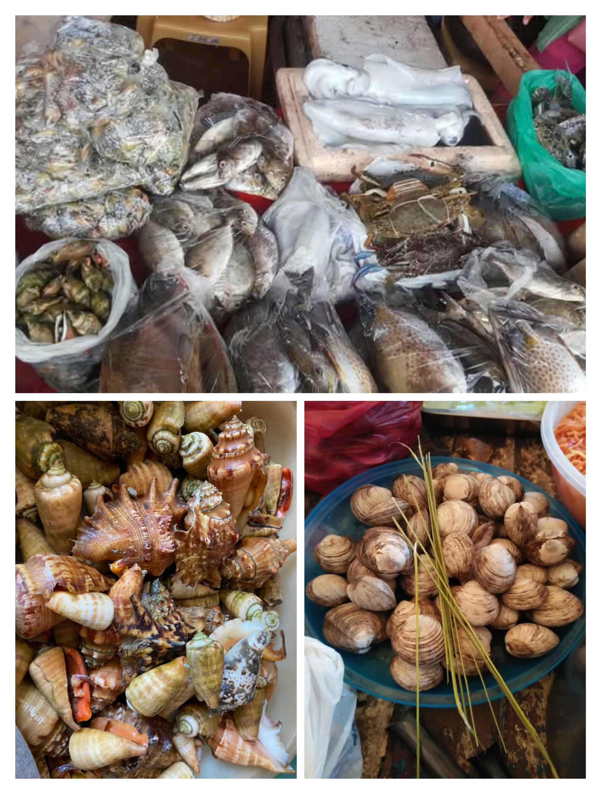

Baliangao, Misamis Occidental is the White Sand Beach Destination and Seafood Capital of Misamis Occidental.


Baliangao is a coastal town located in the province of Misamis Occidental, Philippines. The name Baliangao was derived from the Cebuano phrase balay sa langaw meaning “house of flies”. According to folk tales, the place was called as such because of the multitude of flies living off the decomposing fish which just lay on the beach. Baliangao has a long and storied history that dates back to pre-colonial times. The town was originally settled by the Subanon people, an indigenous group that has lived in the area for thousands of years. In the 16th century, Spanish explorers arrived in the region and established a settlement in the nearby town of Oroquieta. During the American colonial period, Baliangao was established as a municipality in 1918.
The town's economy is primarily based on agriculture and fishing, with coconut, rice, and fish being the main products. Baliangao is also home to several small businesses and cottage industries that produce handicrafts, furniture, and other products. Baliangao celebrates several events and festivals throughout the year, including the Dagatnon Festival. The Dagatnon Festival is a festival held in Baliangao, Misamis Occidental. The festival includes competitions for street dancing, musicality, and costumes which is held every 16th of July. This event features a procession, mass, and other religious ceremonies. Baliangao is a beautiful town that offers plenty of attractions and activities for visitors to enjoy. Whether you are interested in exploring the town's history and culture, enjoying its natural beauty, or simply relaxing in the beautiful surroundings, Baliangao is a destination that should not be missed.